<div style="  background: inherit">

  <div class="row" class="px-0">
    <div class="container">

      <div class="logo">
        
      </div>

      <div class="modos">

        <button mat-raised-button color="Accent"><span class="material-symbols-outlined">nest_heat_link_gen_3
        </span></button>

        <button mat-raised-button color="Accent"><mat-icon>account_circle</mat-icon></button>

        <button mat-raised-button color="Accent"><mat-icon>facebook</mat-icon></button>

        <app-audio></app-audio>


        <!-- Muestra el botón de "modo oscuro" si el modo oscuro no está habilitado -->
        <button mat-raised-button color="warn" (click)="onSetTheme('dark-theme')" *ngIf="!isDarkMode">
          <span class="material-symbols-outlined">dark_mode</span>
        </button>

        <!-- Muestra el botón de "modo claro" si el modo oscuro está habilitado -->
        <button mat-raised-button color="primary" (click)="onSetTheme('light-theme')" *ngIf="isDarkMode">
          <span class="material-symbols-outlined">light_mode</span>
        </button>


      </div>

    </div>
  </div>

  <app-header></app-header>

  <router-outlet></router-outlet>
</div>

<app-footer></app-footer>